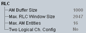

RLC UE Capabilities
The UE capability information in the RLC section indicates in which way the UE supports the radio link control acknowledged mode (RLC AM).

RLC UE capabilities
- "AM Buffer Size":
Maximum total buffer size across all RLC AM entities supported by the UE - "Max. RLC Window Size":
Maximum RLC window size supported by the UE - "Max. AM Entities":
Maximum number of AM entities supported by the UE - "Two Logical Channels Config":
Support of AM entity configured with two logical channels